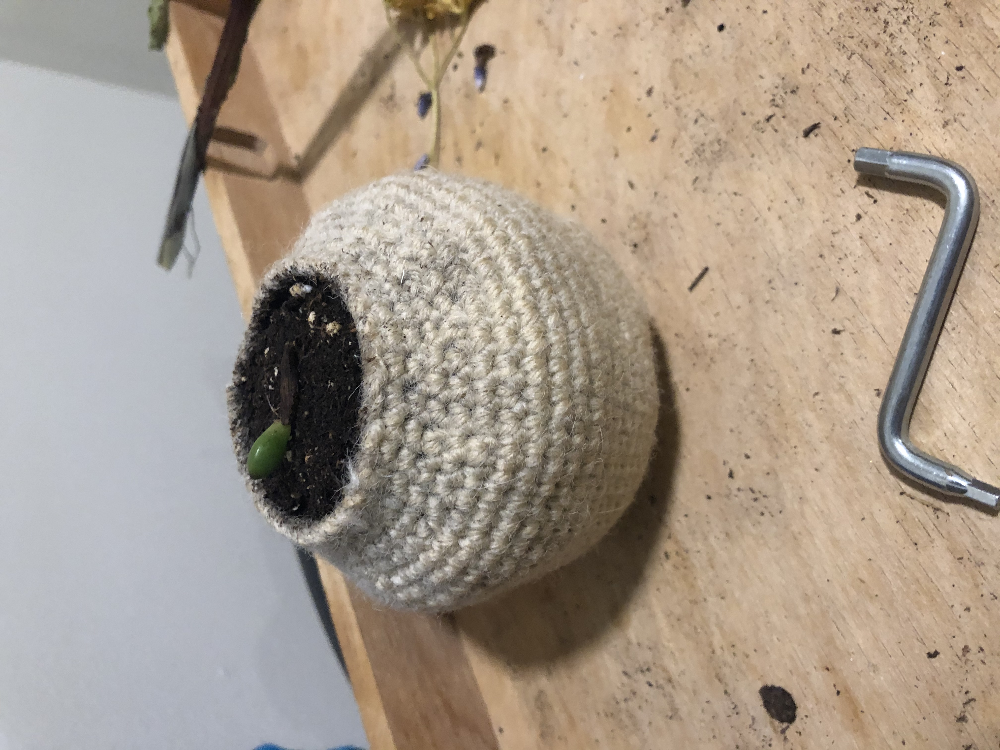
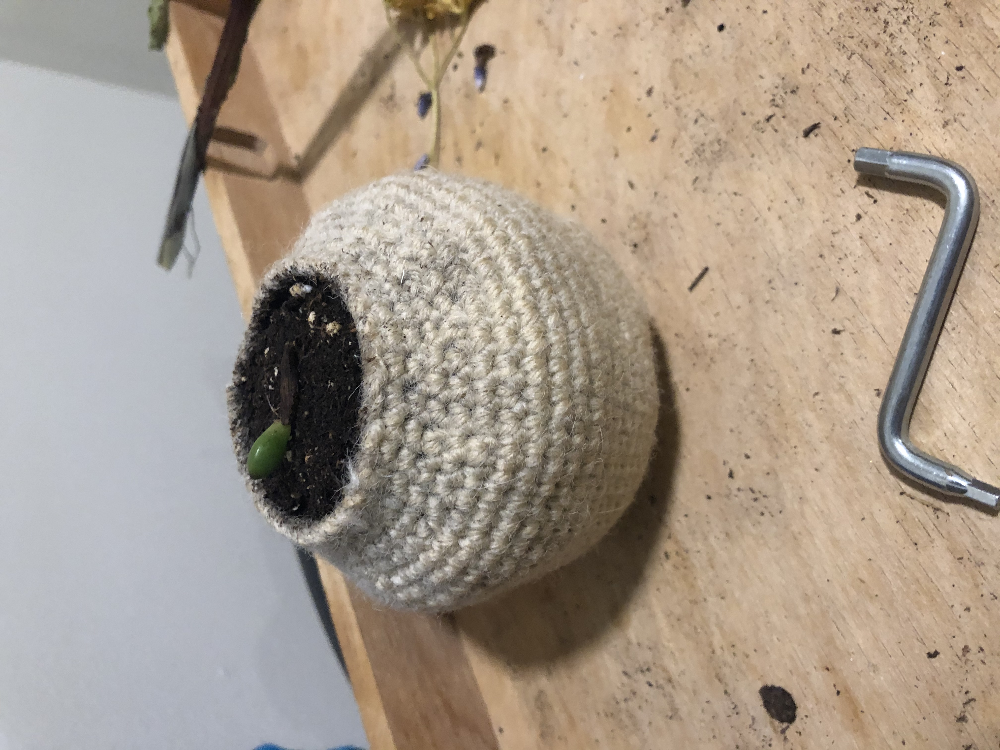

Hi, this is page 6 of the journal.
I found out about crochet planters at the farmers market the other day and they were so expensive! I decided to make my own instead and I found a great reference picture.
After I finished the planter, I put a jellybean prop on top of it and hopefully it'll propagate soon.
 
